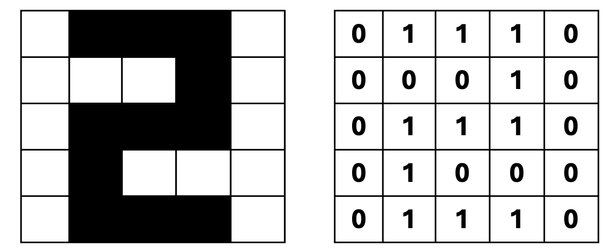
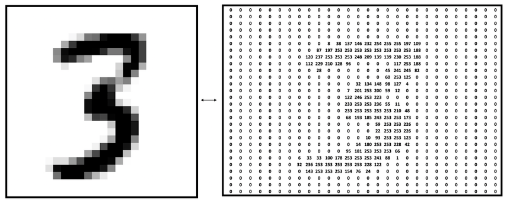
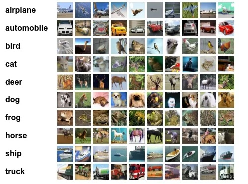

Probability Foundations
& Entropy
Why probability is the language of AI
Albert No · Yonsei University
Fall 2026
Contents
Why Probability?
The language of AI
Data = Samples from a Distribution
Every dataset: draws from an unknown distribution $P$.
Learning = inferring structure of $P$ from samples
Models = Distributions
- Classifier output = pmf over labels (soft label)
- Generative model = distribution over images
- RL policy = distribution over actions
Three Questions for Today
What is a random image?
Sample space, events, probability measure
How uncertain is a prediction?
Entropy: the measure of uncertainty
What is maximal uncertainty?
The bound $H(X) \leq \log M$, proved
One number summarizes the randomness of any distribution.
Probability Review
Sample space, events, probability measure
Sample Space and Events
Sample space $\Omega$: set of all possible outcomes
Event $E$: a (measurable) subset of $\Omega$
Event collection $\mathcal{F}$: set of events
Probability Measure
Assigns each event a number in $[0,1]$:
- $P(\emptyset) = 0$, $P(\Omega) = 1$
- Larger event, larger probability
Triple $(\Omega, \mathcal{F}, P)$: the full probabilistic model.
Example — Fair Coin
Sample space $\Omega = \{H, T\}$, events:
Probability measure:
Every subset gets a probability: four events total.
Example — 5×5 Binary Image
An image = a 25-dimensional binary vector:

Careful: $[0,1]$ is an interval; $\{0,1\}$ has two elements.
Example — MNIST
Grayscale 28×28, pixel intensity 0 to 255:

The probability on $\Omega$ is not uniform (of course)
Example — CIFAR-10
RGB color 32×32, three channels:

Sample Spaces of Real Data
| Dataset | $\Omega$ | $|\Omega|$ |
|---|---|---|
| Fair coin | $\{H, T\}$ | $2$ |
| 5×5 binary | $\{0,1\}^{25}$ | $2^{25} \approx 3.4 \times 10^{7}$ |
| MNIST | $\{0,\dots,255\}^{28\times 28}$ | $2^{6272} \approx 10^{1888}$ |
| CIFAR-10 | $\{0,\dots,255\}^{3\times 32\times 32}$ | $2^{24576} \approx 10^{7398}$ |
| ImageNet | $\{0,\dots,255\}^{3\times 224\times 224}$ | $2^{1204224} \approx 10^{362508}$ |
Astronomical, and Non-Uniform
- Atoms in the universe: roughly $10^{80}$
- Almost every element of $\Omega$: pure noise
Data distributions put huge mass on tiny regions: that structure is what models learn.
Random Variables
From outcomes to numbers
Random Variable
A map from sample space to real numbers:
Uppercase $X$: the random variable. Lowercase $x$: a realization.
Example — Count of Ones
On $\Omega = \{0,1\}^{5\times 5}$: let $X$ = number of 1's
This outcome $\omega$: the digit "2"
Eleven blue pixels: one number per image.
Example — Seven Coin Tosses
On $\Omega = \{H,T\}^{7}$: let $X$ = number of heads followed by a tail
Probability Mass Function
The pmf of a random variable $X$:
- $\mathcal{X}$: set of possible values of $X$
- Uppercase $X$ random, lowercase $x$ realization
The pmf completely characterizes the random variable.
Example — pmf of a Fair Die
Expectation
Probability-weighted average of the values:
Definition (expectation).
Fair die:
Expectation of a Function
Exercise. For any $f : \mathcal{X} \rightarrow \mathbb{R}$, show
Hint: set a new random variable $Y = f(X)$
We use this constantly today: entropy is $\mathbb{E}[f(X)]$ for one special $f$.
Entropy
Measuring uncertainty
How Surprising Is an Outcome?
Indicator $X$: $X = 1$ serious earthquake, $X = 0$ otherwise
$X = 0$ (typical day)
$p_X(0) \approx 1$
No surprise at all
$X = 1$ (earthquake)
$p_X(1)$ small
Very surprising
Rare event = surprising. Surprise should grow as $p_X(x)$ shrinks.
Surprisal
Definition (surprisal).
Why the Logarithm?
- Certain outcome: $p = 1 \Rightarrow S = 0$
- Rarer outcome, larger surprise: $S$ decreasing in $p$
- Independent surprises add:
Deeper axiomatic justification exists (information theory); other measures too, e.g. Renyi entropy.
Entropy — Definition
Expected surprisal of $X$ with $\mathcal{X} = \{0, 1, \dots, M-1\}$:
Conventions: $0 \cdot \log 0 = 0$; $\log$ is base 2; unit is bits
Entropy Reads Two Ways
Uncertainty
How unpredictable is $X$ before observing?
Information
How much do we learn after observing?
Same number: resolving uncertainty = gaining information.
Worked Example — Fair Coin
$p_X(H) = p_X(T) = 1/2$:
One fair coin toss = exactly one bit of uncertainty.
Worked Example — Biased Coin
$p_X(0) = 0.01$, $p_X(1) = 0.99$:
Rare outcome: surprisal $\log 100 \approx 6.64$ bits, but weight only $0.01$
Which Is More Random?
Both binary, $\mathcal{X} = \{0, 1\}$:
Entropy agrees with intuition: $X$ far more uncertain than $Y$
Binary Entropy Function
Bernoulli($p$): $h_2(p) = -p \log p - (1-p)\log(1-p)$
Symmetric: $h_2(p) = h_2(1-p)$; zero at both ends.
Worked Example — Fair Die
Uniform on six faces, $p_X(x) = 1/6$:
Uniform pmf: entropy is just $\log$ of the alphabet size. Keep this in mind.
Worked Example — Three Outcomes
$p = \bigl(\tfrac{1}{2}, \tfrac{1}{4}, \tfrac{1}{4}\bigr)$: surprisals $1, 2, 2$ bits
Between coin ($1$ bit) and uniform-on-3 ($\log 3 \approx 1.585$)
Guessing Game
Alice picks a number 0 to 7; Bob asks yes/no questions
Q1: is it in $\{0,1,2,3\}$? Q2: is it in $\{3, 6\}$?
Which Question Is More Informative?
Entropy of the yes/no answer:
Q1 wins: higher-entropy answer = more informative question.
Twenty-Questions View
Halving questions pin down Alice's number:
Entropy = number of good yes/no questions needed, on average.
Two Dice — Which More Uncertain?
Same six faces, different pmfs. Guess first, then compute.
Two Dice — Computing $H$
$D_1$ is more uncertain: closer to uniform
Both below $\log 6 \approx 2.585$: a hint of things to come.
AI Example — Classifier Soft Labels
Digit classifier $f$ (labels 0 to 4) outputs a pmf:
- Reads: digit "0" w.p. $0.4$, digit "2" w.p. $0.2$
- Soft guessing, like a weather forecast
Which Sample Is Harder?
Entropy ranks $x_1$ as more uncertain: mass spread over all five labels.
AI Example — Data Valuation
Which sample is most helpful for training?
- Challenging samples teach the model most
- High-entropy prediction = model still confused there
AI Example — Explore vs Exploit
Go strategies A to E; current belief: A is best
- Exploit A, but reserve probability for exploration
- $H(S_1) \approx 1.771 > H(S_2) \approx 1.522$: $S_1$ more explorative
Entropy = a measure of explorativeness of a policy.
Exercise — Geometric Distribution
Let $X$ be geometric with $p = 1/2$:
Exercise. What is $H(X)$?
Hint: surprisal of outcome $x$ is exactly $x$ bits, so $H(X) = \mathbb{E}[X]$
Properties of Entropy
Jensen's inequality and $0 \leq H \leq \log M$
Theorem — Non-Negativity
Theorem 1 (non-negativity).
Entropy is non-negative:
with equality if and only if $X$ is deterministic.
A sanity floor: no distribution has negative uncertainty.
Proof — Non-Negativity
Every probability satisfies $0 \leq p_X(x) \leq 1$:
Equality: needs $p_X(x)\log p_X(x) = 0$ for all $x$
So every $p_X(x)$ is $0$ or $1$: $X$ deterministic
Question — Which pmf Maximizes $H$?
Floor is settled. What about the ceiling?
Guess: uniform maximizes entropy. To prove it we need a tool.
Technique Review — Convex Functions
Definition (convex).
$f$ is convex if for all $x, y$ and $0 \leq \lambda \leq 1$:

Technique Review — Concave Functions
Flip the inequality: $f$ concave if
Chord under the curve. Key example: $\log$ is concave.
Convex or Concave?
$x^2$
Convex: chord above
$\log x$
Concave: chord below
$h_2(p)$
Concave: the arch we plotted
Exercise. Show the binary entropy $h_2(p)$ is concave
Hint: second derivative.
Jensen's Inequality — Statement
Theorem 2 (Jensen's inequality).
Let $f$ be concave. Then
For strictly concave $f$: equality iff $X$ is constant.
For convex $f$ the inequality flips.
Jensen — Reading the Statement
Concavity compares two points; Jensen compares any pmf:
Weighted average of $f$ values never beats $f$ at the weighted average input.
Jensen — Proof Overview
Target, for pmf $(p_1, \dots, p_M)$ on points $(x_1, \dots, x_M)$:
Induction on the support size $M$:
- Base $M = 2$: exactly the definition of concavity
- Step: peel off one atom, renormalize the rest
Jensen Proof — Base Case
$M = 2$: pmf $(p_1, p_2)$ with $p_2 = 1 - p_1$
Left side is $\mathbb{E}[f(X)]$, right side is $f(\mathbb{E}[X])$
The definition of concavity, wearing expectation notation.
Jensen Proof — Peel One Atom
Assume true for $M - 1$ points. Split off atom $M$ (take $p_M \lt 1$):
The $q_i$ sum to one: a valid pmf on $M-1$ points
Renormalizing is the whole trick: the rest is bookkeeping.
Jensen Proof — Induction Step
Recap: peeled form $p_M f(x_M) + (1-p_M)\sum_i q_i f(x_i)$
Jensen — Proof Summary
- Key trick: renormalize the rest into a smaller pmf
- Two-point concavity does all the lifting
- Equality (strict $f$): all mass at one point
Jensen — Why We Care
- Today: maximum entropy, $H(X) \leq \log M$
- Next lecture: KL divergence is non-negative
- Everywhere in ML: log-likelihood lower bounds (ELBO)
One-line recipe: expectation trapped under a $\log$? Push it inside.
Theorem — Maximum Entropy
Theorem 3 (maximum entropy).
For a random variable $X \in \mathcal{X}$ with $|\mathcal{X}| = M$:
with equality if and only if $X$ is uniform.
The ceiling we guessed: uniform is the most uncertain pmf.
Max Entropy — Proof Overview
Target: $H(X) \leq \log M$. Three moves:
- Write $H(X)$ as $\mathbb{E}\bigl[\log \tfrac{1}{p_X(X)}\bigr]$
- Jensen: $\log$ concave, push $\mathbb{E}$ inside
- Cancellation: $\mathbb{E}\bigl[\tfrac{1}{p_X(X)}\bigr]$ collapses to $M$
Step 3 is the punchline: watch the pmf cancel itself.
Proof — Apply Jensen
The random quantity inside is $\tfrac{1}{p_X(X)}$; $\log$ is concave:
One unknown left: the expectation on the right
Proof — The Cancellation
Expand the expectation over $x$ with weights $p_X(x)$:
Weight $p_X(x)$ meets value $1/p_X(x)$: each term is exactly 1.
Proof — Equality Condition
Jensen (strictly concave $\log$) is tight iff the inside is constant:
Constant pmf summing to one: the uniform distribution
Matches the fair die: $H = \log 6$ exactly.
Max Entropy — Proof Summary
- Key trick: $1/p_X$ inside its own expectation cancels
- Jensen direction set by concavity of $\log$
- Tight iff $p_X$ uniform
Implication — The Entropy Scale
Every six-outcome pmf lives on one axis:
Implication — Bits to Describe $X$
- $\log M$ = bits to index $M$ items
- Guessing game: 8 numbers, $\log 8 = 3$ questions
- Uniform Alice is the hardest opponent
Uniform = maximal ignorance: no structure to exploit.
Sanity Check — All Examples
| Distribution | $H$ (bits) | $\log M$ |
|---|---|---|
| Fair coin | $1$ | $\log 2 = 1$ (tight!) |
| Biased coin $(0.01, 0.99)$ | $0.081$ | $1$ |
| Dice $D_1$, $D_2$ | $2.503$, $1.938$ | $\log 6 \approx 2.585$ |
| Soft labels $f(x_1)$, $f(x_2)$ | $1.771$, $1.522$ | $\log 5 \approx 2.322$ |
Tight exactly when uniform, as the theorem promised.
Recap — Today's Chain
- Datasets = sample spaces; models = distributions
- Entropy: expected surprisal, in bits
- Extremes: deterministic vs uniform
Next — The Wrong Distribution
Surprisal used the true pmf $p_X$. But a model only has a guess $Q$:
- How much does the mismatch cost?
- Same Jensen trick, one more twist
Next lecture: cross-entropy and KL divergence — the loss function of deep learning.
Questions?